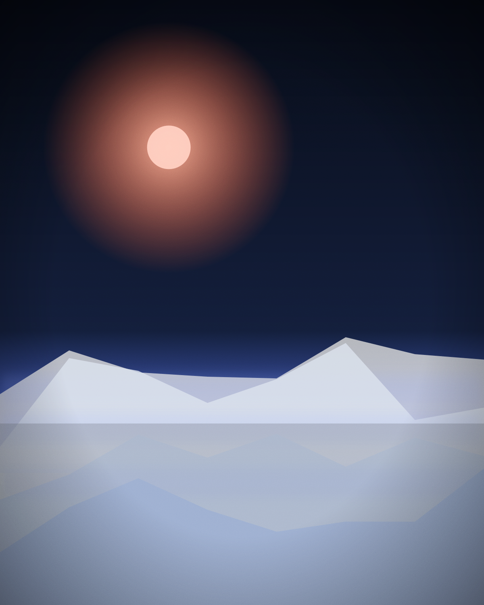
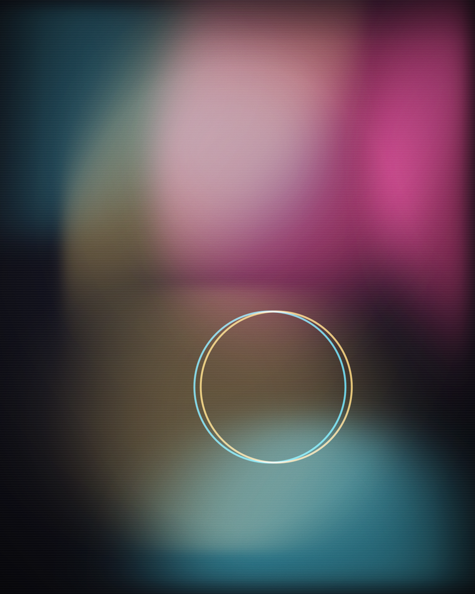
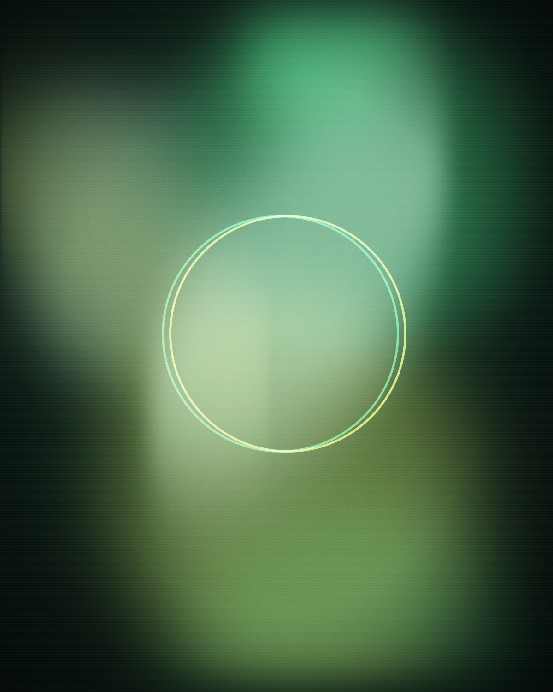
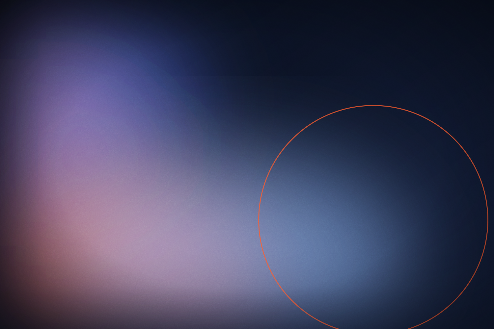
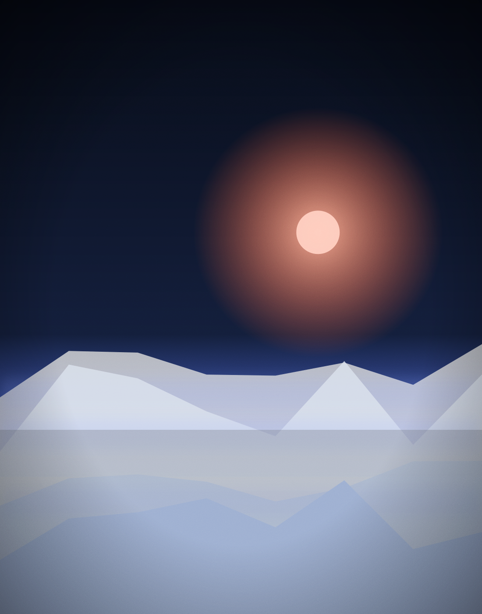
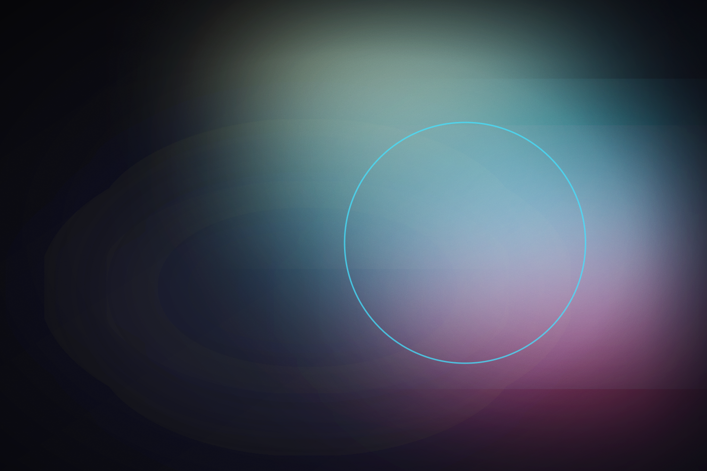
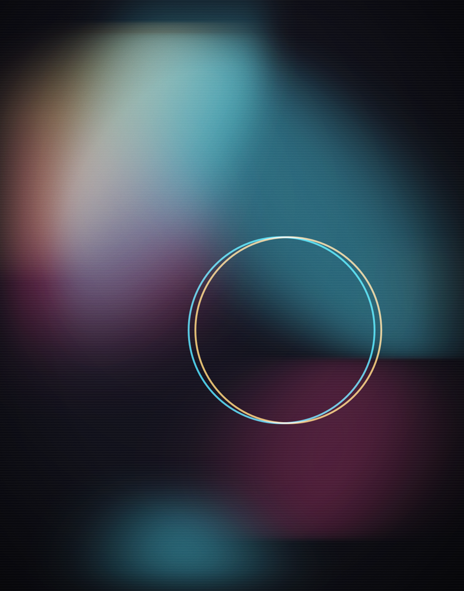
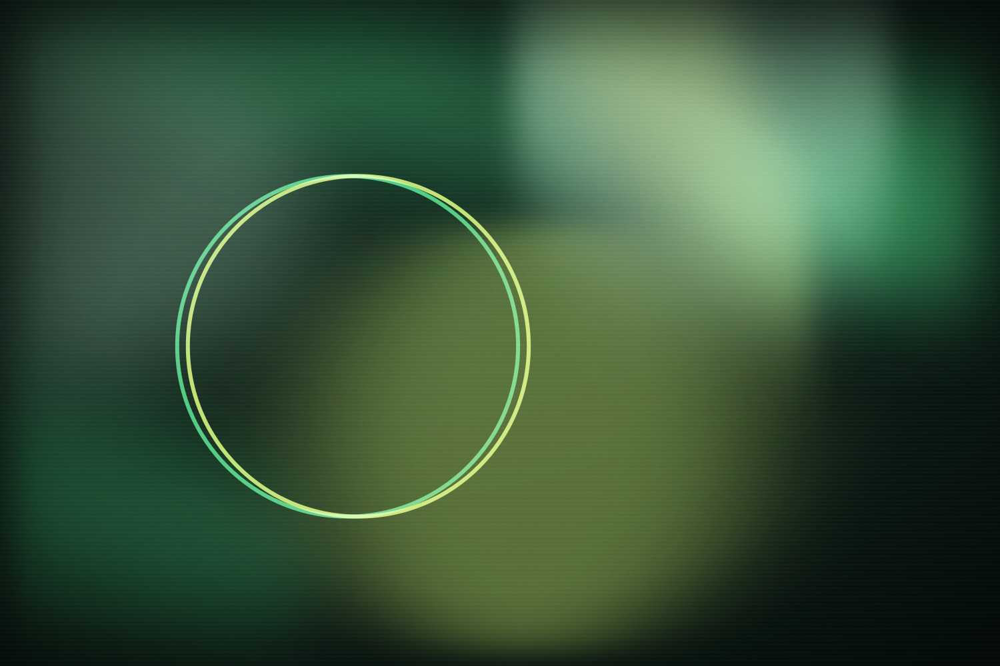
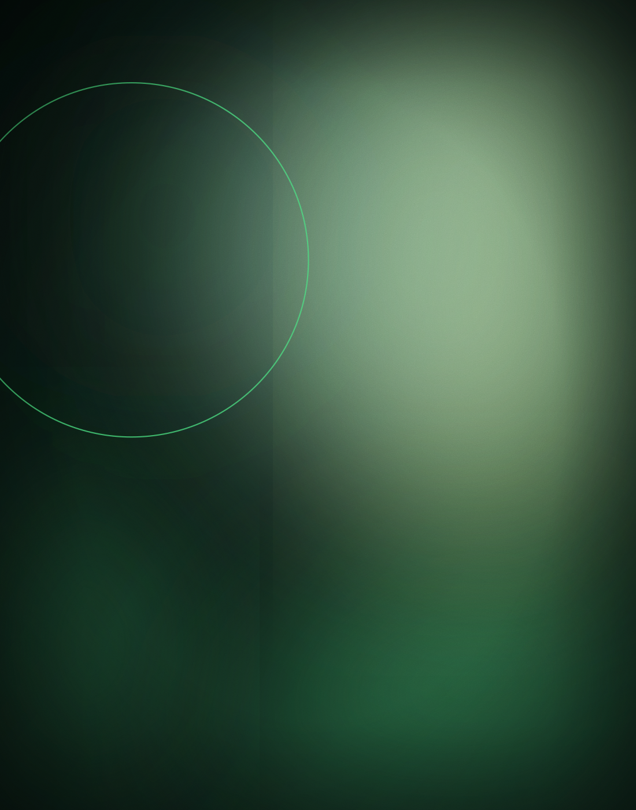

AI FilmsObsidian Sky
A four-minute speculative AI film about memory, landscape and the images we lose.
Generative films, image series and latent-space experiments treated with real craft.
A sandbox for generative filmmaking and image-making — where prompts become storyboards and models become collaborators.

AI FilmsA four-minute speculative AI film about memory, landscape and the images we lose.

AI ImagesAn ongoing study of colour, material and light generated at the edge of legibility.

ExperimentsA latent-space walkthrough where botanical forms grow, mutate and dissolve in real time.
Drag / scroll →





